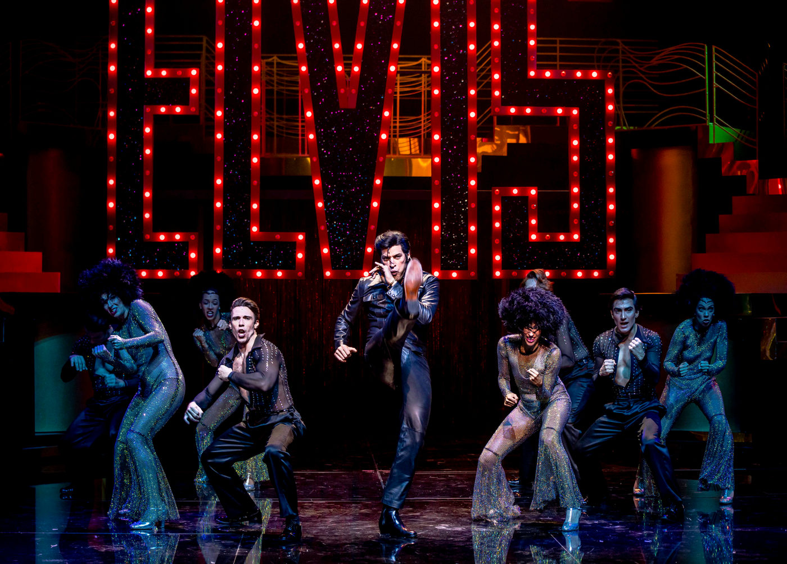

ELVIS, UM MUSICAL QUE NÃO REVOLUCIONA

No último final de semana fui assistir a um típico espetáculo de navio, só que realizado em terra firme. Muita escadaria, muita passarela e tombadilho, muito dourado, muito balcão art-déco, muita pluma na cabeça e dá-lhe Swarovski fake.
Mas isso tudo é, claro, linguagem... ser um simulacro de um show de Las Vegas. E vai bem quando o assunto é a voz-ícone da cidade dos cassinos. Falo de Elvis – A Musical Revolution.
E dentro dessa proposta, a sempre engenhosa cenografia de Natália Lana – bastante eficiente em espetáculos como Conserto Para Dois ou Querido Evan Hansen – acaba resultando talvez um pouco excessiva neste Elvis. Enquanto isso, o figurino se alterna entre a linguagem de show e o realismo, numa profusão de peças e adereços espantosa – tudo resultando bem. Ainda sobre isso, acredito que o figurino do trio Ligia Rocha, Jemima Tuany e Marco Pacheco tenha sido dos melhores que vi nos últimos tempos (nomes vistos anteriormente também em espetáculos de Miguel Falabella).
Ao figurino soma-se o visagismo criado por Dicko di Lorenzo, com uma postiçaria de excelente qualidade. Já o desenho de luz muitas vezes parece show demais... e eu confesso que tenho problemas com essa palavra (show) quando aplicada ao teatro. E, sim, teatro musical é teatro.
Agora sobre os aspectos concernentes ao gênero. Os arranjos e a orquestração são muito espertos e trazem a chancela do americano David Abbinanti (um dos criadores do espetáculo ‘nas gringa’), apresentando insinuações musicais que oscilam entre o repertório do Rei do Rock e outras que sinalizam uma época. Por exemplo a referênica a Sing, Sing, Sing! (Louis Prima) na orquestração de Benny Goodman; ou os acordes de Bridge Over Troubled Water durante um dos muitos diálogos entre Elvis e sua mãe (o problema é que a gente espera a canção e ela não vem!).
A Direção musical de Jorge Godoy vai bem, mas a preparação dos cantores derrapa na grande armadilha deste musical: canções em inglês. Imagine um espetáculo feito por um elenco de americanos (do Texas, de Nova Iorque e da California), irlandeses, escoceses, ingleses, australianos e neo-zelandeses, todos cantando ao mesmo tempo e em coro. Seria quase uma Babel. É mais ou menos assim que soam os coros de Elvis – A Musical Revolution. Um salve-se quem puder, uma mistura de Yazigi, Cel-Lep e Fisk.
Falar de musical sem falar de coreografias é impossível. Todas as que tocam na ideia de – repito – show, até que vão bem... meio com cara de chacrete. Mas definitivamente as sequências militares não dão certo. Seja porque talvez a coreógrafa – Bárbara Guerra – não entendesse claramente o conceito e a linguagem adequada, seja porque faltou tempo ou porque não se deu importância para o assunto. Fica capenga.
Como disse anteriormente, vou morrer insistindo na frase: teatro musical é, antes de qualquer coisa, teatro e, portanto, narrativa! E fico surpreso porque existem produções que ainda parecem ignorar isso completamente. Esta produção, apesar de alguns pesares, ainda tem uma vantagem: um diretor (Miguel Falabella) que entende de teatro e uma preparadora de elenco (Érica Montanheiro) ocupada em fazer com que as performances se pareçam verossímeis, vivas, humanas – sem perder teatralidade. E isso, acredite, é muito!
Entretanto, fica uma pulga atrás da orelha. Parece que a técnica não se sente parte integrante do “artístico” talvez siga orientações de palco (os tais callings) que algumas vezes prejudicam atores, músicos e público. Não basta ser bonito (e isso, com certeza, este musical é), é preciso ter consistência em todos os muitos aspectos que concorrem para um resultado final. O que isso quer dizer? Acredito que não basta um bom desenho de luz, é preciso ter uma operação de luz atenta e colaborativa para que os atores não fiquem no escuro e a história seja contada. Não adianta pagar uma fortuna para um desenho de som e microfones incríveis, se a operação segue regras de microfonação em que atores são silenciados em cena deliberadamente ou acidentalmente.
Artistas são humanos e respiram – e como público, eu gostaria de ouvir os gritinhos das vedetes ou o fungar de algumas lágrimas. Finalmente, acredito que artistas são todos aqueles que estão sobre o palco e na técnica trabalhando coletivamente para um resultado que imprima verosimilhança e, portanto, vida sobre o palco. O microfone já tira boa parte dessa verdade... portanto, é preciso que a operação seja sensível.
A dramaturgia de Elvis é um produto gringo, raso e superficial. Confesso que estou cansado de musicais biográficos e mais, exausto da velha fórmula em que nos apresentam o protagonista sentado no camarim alguns instantes antes de entrar em cena vivendo um conflito existencial qualquer. Pior ainda se este conflito não fica claro... muito pior se vemos uma figura alegórica que não se explica – uma caveira de Halloween. Em geral, os personagens não são mais do que pinceladas, “rascunhos em carvão” como diria o grande Gianni Ratto. Ainda assim e contra todos os contratempos, alguns desempenhos chamam atenção justamente por sua carga de humanidade.
Gostaria de ressaltar a inteligência dos desempenhos de Fabiana Gugli (plena de delicadeza no papel de Gladys Presley), Bruno Sigrist (sempre um ator que busca um viés de humor e simpatia, o que ele alcança com seu Sam Philips) e Eduardo Semerjian (certeiro no papel do Coronel – que breve passará a ser feito por Leopoldo Pacheco).
E, claro, dei muitas risadas com as performances de Dion Seabra, dono de uma verve e humor autenticamente brasileiros. Ainda sobre desempenhos, uma cena chama atenção negativamente: uma discussão entre Elvis e Priscilla em que uma violenta altercação dá lugar a um tom melodramático e folhetinesco. Seria medo de tornar o herói violento aos olhos dos fans?
E, no final das contas, é sobre isso: fans! Eles cantam junto, requebram e batem palmas – como se espera em qualquer juke-box. Falei que não empolga? Toca o baile!